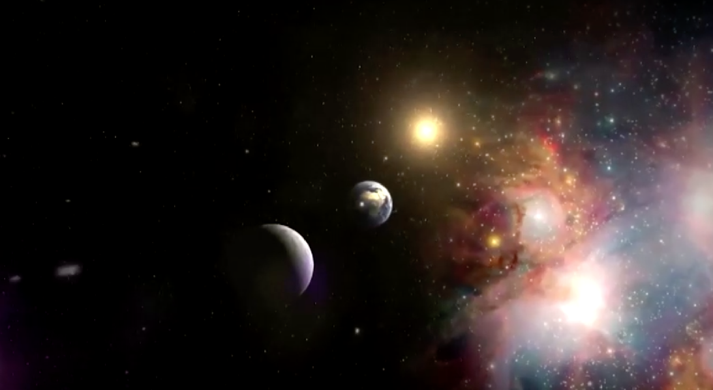
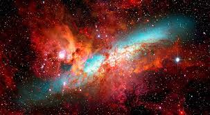
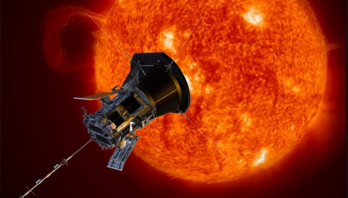
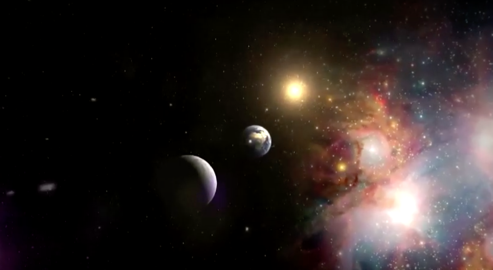
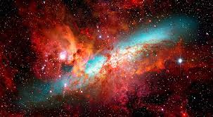
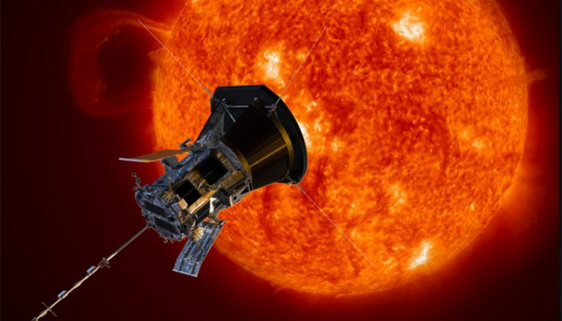
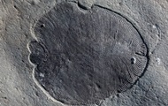

Ученые обнаружили аномальное небесное тело
Корреспондент.net,
 





Фото: wccftech
Найдена странная нейтронная звезда
Эта звезда извергает релятивистские струи плазмы при том, что обладает очень сильным магнитным полем.
Группа ученых из Амстердамского университета (Нидерланды) обнаружила необычное небесное тело - нейтронную звезду, извергающую релятивистские струи плазмы. Необычно в ней то, что джеты у нее возникают несмотря на слишком сильное магнитное поле. Об этом пишет Wccftech.
ПО ТЕМЕ

Ученые нашли останки древнейшего
существа на Земле
Расположено небесное тело в составе двойной системы Swift J0243.6+6124. Последняя удалена от Земли на 24 тысячи световых лет.
Специалисты выяснили, что вещество от более крупной звезды, расположенной поблизости с компактным объектом, перетекает на него, в результате чего образуется аккреционный диск.
С полюсов нейтронной звезды выбрасываются струи ионизированных частиц, которые достигает околосветовых скоростей.
Известно, что джеты ученые могли наблюдать у многих объектов, однако никогда прежде - у звезды с мощным магнитным полем. Считалось, что оно препятствует образованию струй.
Таким образом, находка опровергает гипотезу о магнитном подавлении релятивистских струй. Предположительной причиной образования струй является большое количество вращательной энергии диска. Однако это еще лишь предстоит изучать.
Ранее сообщалось, что ученые обнаружили на Марсе зону, которая миллиарды лет назад могла быть пригодной для жизни.
Новости от Корреспондент.net в Telegram. Подписывайтесь на наш каналhttps://t.me/korrespondentnet